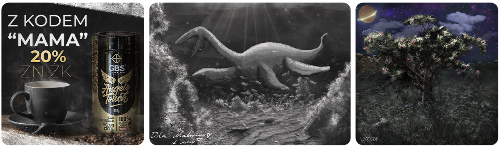

Wizualna prezentacja
Korzystna prezentacja zwiększa szansę na sprzedaż. Dlatego uważam, że mockupy to jeden z ważniejszych elementów przy projekcie. Chętnie wykonuje je na własną rękę, gdyż pozwala to na lepsze dopasowanie do konkretnego zlecenia. Nie wyobrażam sobie prezentacji projektu na samochód, bez wykonania go bezpośrednio na pojeździe w odpowiednim programie.
Szeroko pojęta grafika
Głownie zajmuję się grafiką reklamową, ponieważ ma ona największy popyt na rynku. Mimo to, z wielką chęcią sięgam to innych działów grafiki rastrowej, np. takich jak rysowanie, projektowanie konceptów czy szkicowanie.
- Wizytówki
- Banery
- Ulotki
- Karty podarunkowe
- Katalogi
Najczęstsze projekty, jakie wykonuje to: